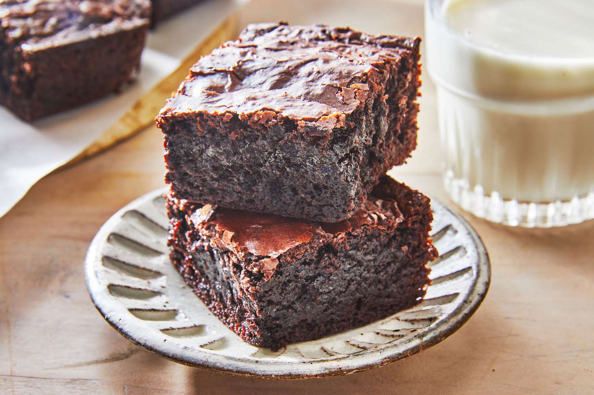

Brownie

Description
A chocolate brownie, or simply a brownie, is a chocolate baked confection.
Brownies come in a variety of forms and may be either fudgy or cakey,
depending on their density. Brownies often, but not always, have a glossy
"skin" on their upper crust.
Ingredients
- 2 Eggs + Water
- Powdered Sugar
- Unsweetend Cocoa Powder
- Oil
- Vanilla Extract
Steps
-
First, mix together the day and wet ingredients in two seperate
bowls.Combine the sugar, flour, powdered sugar, cocoa powder, chocolate
chips, and salt in a medium bowl. Then, whisk together the eggs, olive
oil, and water in a large one.
-
Next, combine the wet and dry ingredients.Sprinkle the
dry mixture over the wet one, and fold until just combined. The batter
will be thick!
-
Then, pour the batter into an 8x8 inch baking pan lined with
parchment paper.
Use a rubber spatula to spread it to all four sides of the pan and to
smooth the top. The mixture will be very thick - that's ok.
-
Finally, bake!Transfer the pan to a 325-degree oven and
bake for 40 to 45 minutes, until a toothpick inserted comes out with a
few crumbs attached. Allow the brownies to cool completely before
slicing and serving. Enjoy!